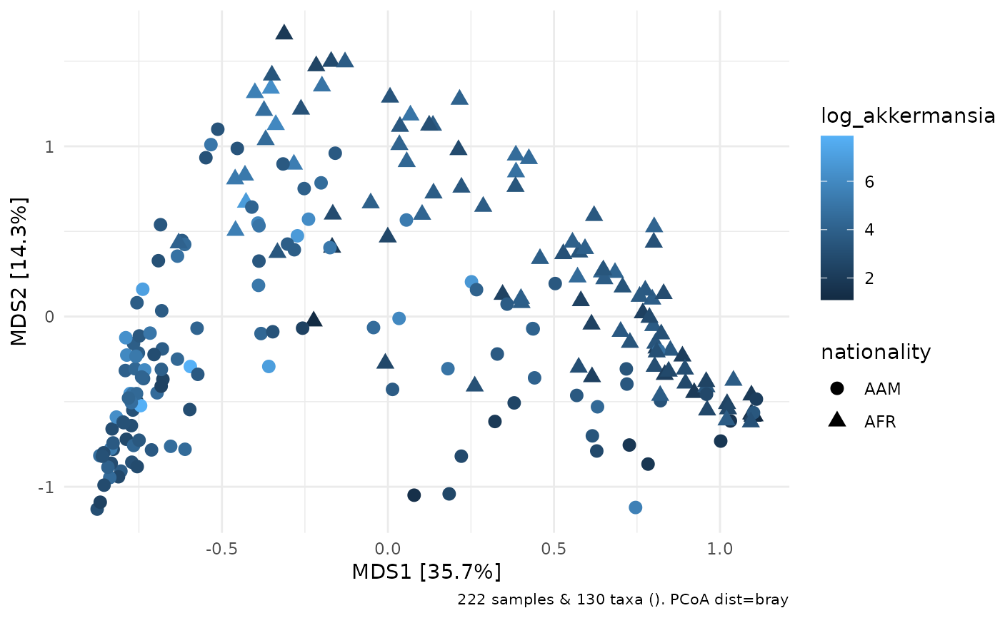

Copy phyloseq otu_table data to sample_data
ps_otu2samdat(ps, taxa = NULL)
| ps | phyloseq with sample_data |
|---|---|
| taxa | list of taxa_names to copy to sample_data, or NULL (which selects all with |
phyloseq with augmented sample_data
library(dplyr) library(phyloseq) library(microbiome) data("dietswap") ps <- dietswap %>% ps_otu2samdat("Akkermansia") sample_variables(ps)#> [1] "subject" "sex" "nationality" #> [4] "group" "sample" "timepoint" #> [7] "timepoint.within.group" "bmi_group" "Akkermansia"# or if you do not specify any taxa, all are copied ps_all <- dietswap %>% ps_otu2samdat() sample_variables(ps_all)[1:15]#> [1] "subject" "sex" #> [3] "nationality" "group" #> [5] "sample" "timepoint" #> [7] "timepoint.within.group" "bmi_group" #> [9] "Actinomycetaceae" "Aerococcus" #> [11] "Aeromonas" "Akkermansia" #> [13] "Alcaligenes faecalis et rel." "Allistipes et rel." #> [15] "Anaerobiospirillum"# this could be useful for colouring ordination plots, for example ps %>% ps_mutate(log_akkermansia = log(Akkermansia)) %>% dist_calc("bray") %>% ord_calc(method = "PCoA") %>% ord_plot( colour = "log_akkermansia", size = 3, shape = "nationality" )